Pipelining
This lesson reviews pipelining to set the stage for more advanced topics.
Pipelining in a processor
This section covers basic pipelining in a processor. Most processors are much more complex than the example provided here, however, this is used to review content for students.
In a traditional processor pipeline, we have are series of stages. The following listing of stages is not all stages, but it encompasses the important ones:
- fetch
- read
- decode
- execute
- memory access
- write
So how does pipelining apply to these stages? Instead of fetching, decoding, and executing one instruction at a time, while one instruction is being decoded, another instruction can be fetched from instruction memory. Then, when one instruction is being executed, we can be decoding the instruction behind it. So, while the latency may not change, the throughput of instructions through the pipeline increases. Below is a high level representation of this concept:
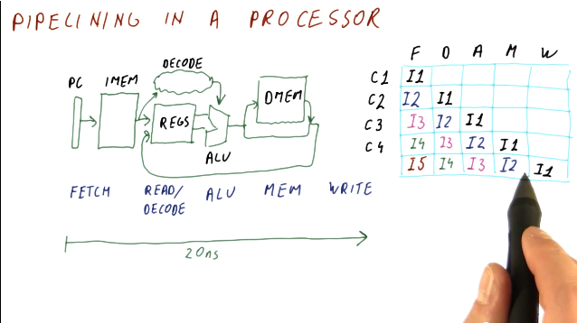
Below is an example of calculating the latency of process with and without a pipeline.

Below is a similar example as the one above, however, this one applies to instructions and cycles.
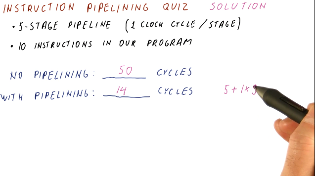
Pipeline cycles per instruction
Throughout these notes we've been assuming one cycle per instruction, or a CPI of 1, when our pipeline is full. In the real-world, however, we'll have billions of instructions to execute - will our CPI always be 1? Here are some reasons why our CPI might not be 1:
- initial fill - when the pipeline initially fills up, our CPI will not be equal to 1. Regardless, as our instruction number reaches infinity, CPI will begin to approach 1.
- pipeline stalls - there exists the possibility that a fault occurs in the pipeline and an instruction stalls, causing it to have to remain at that stage for a cycle.
Below is a high-level representation of how a CPI can be greater than 1.
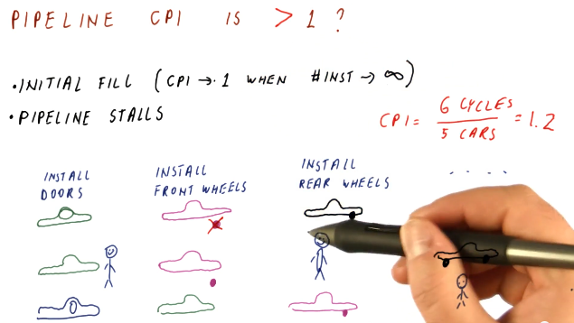
Processor pipeline stalls
A processor pipeline stall usually occurs when some instructions depend upon the outcome of previous instructions that conduct a read/write. In the example below, the program loads a value into a register, increments the register, and then stores that value into a different register. The load operation must occur before the increment and load instruction, otherwise the increment instruction will be incrementing an incorrect value. Because of this dependency, a processor pipeline stall occurs, and a bubble in the pipeline is created. The increment instruction must wait two cycles until the memory is read and written into the register that is to be incremented.
This phenomenon causes our CPI to be greater than 1.
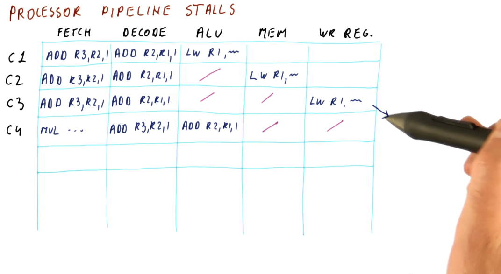
Processor pipeline stalls and flushes
A processor pipeline flush occurs when the processor pipeline fetches and
decodes instructions that aren't actually supposed to be executed, so they're
removed from the pipeline and replaced with bubbles. Below is an example
demonstrating what happens when a JMP instruction is introduced into the
pipeline. Some instructions behind the JMP are fetched and decoded, however,
they are fetched from an incorrect location in memory. After the ALU
determines the destination of the JMP, instructions from the JMP destination
are fetched and decoded, and the instructions that weren't destined to be
executed are flushed from the pipeline.
This is another phenomenon that could cause the CPI to be larger than 1.
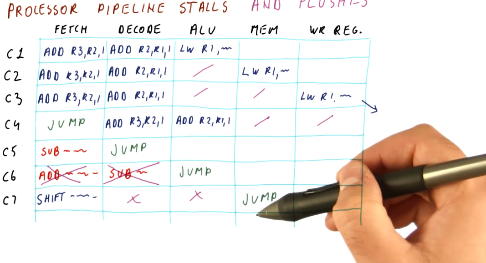
Control dependencies
The problems described in the previous sections that cause these processor pipeline stalls are called control dependencies. The example provided below provides a high-level representation of a control dependency. In the scenario, a branch instruction will jump to some label in code, however, to sections of code depend upon the branch: the code directly after the branch and the code contained at the label.
This example also shows us how to predict the CPI based upon this concept of control dependencies. Given a percentage of instructions are branches, given that a percentages of branches are actually taken, and given that we know that the fetching and decoding of control dependencies causes at least two bubbles in the pipeline, we can calculate the increase in CPI from its normal value of 1.
In later discussions, we will cover a concept called branch prediction that is designed to mitigate the occurrence of these bubbles within the pipeline by predicting where a branch will land in order to fetch and decode the correct instructions. Control dependencies can cause even more bubbles to form in a pipeline if the pipeline contains more than 5 stages, so these issues definitely need to be mitigated to increase performance and normalize the CPI.

Below is an example question from the lectures that asks us to determine the CPI given a percentage of branches/jumps taken and when the branches/jumps are computed in the pipeline.

Data dependencies
Briefly described in this section, data dependencies occur when one instruction depends upon the outcome of another instruction. TODO types of dependencies exist:
- read after write (RAW) - type of dependency in which one instruction relies upon the previous instruction writing some data that will be used by the dependent instruction. This type of dependency is also called a flow dependence because the data flows from one instruction to the other. This type of dependency is also called a true dependency because the value being used by the dependent instruction doesn't exist until the previous instruction writes.
- write after write (WAW) - type of dependency in which the order of write
operations needs to be preserved. The example provided uses registers, in which
a specific value is expected to be within
R1for future instructions. These writes will not be able to to be conducted out of order - they both write to the same location. This type of dependency is also called an output dependency. - write after read (WAR) - type of dependency in which a previous instruction needs to read some data, but a future instruction intends to write to that data. These instructions can not be interleaved, the previous instruction expects the data to be unchanged upon read. The read will take place before the write, creating the dependency. This type of dependency is also called an anti-dependency because it reversed the RAW dependency.
The WAW and WAR dependencies are called false or named dependencies. Read after read (RAR) is not a dependency.
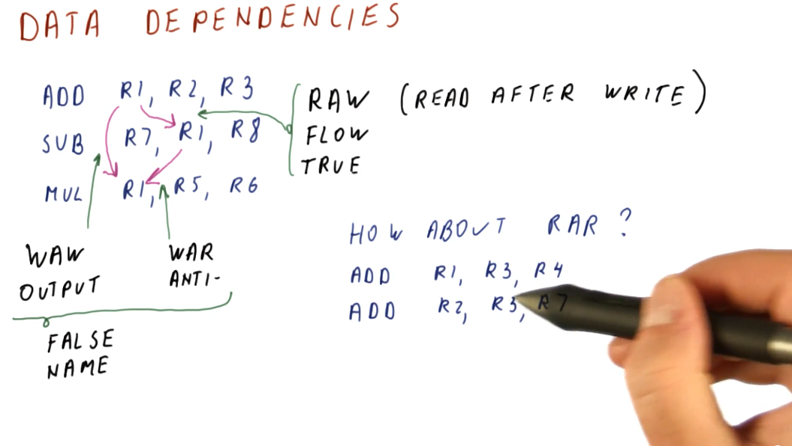
Below is an example from the lectures inspecting a series of instructions to determine what data dependencies exist.
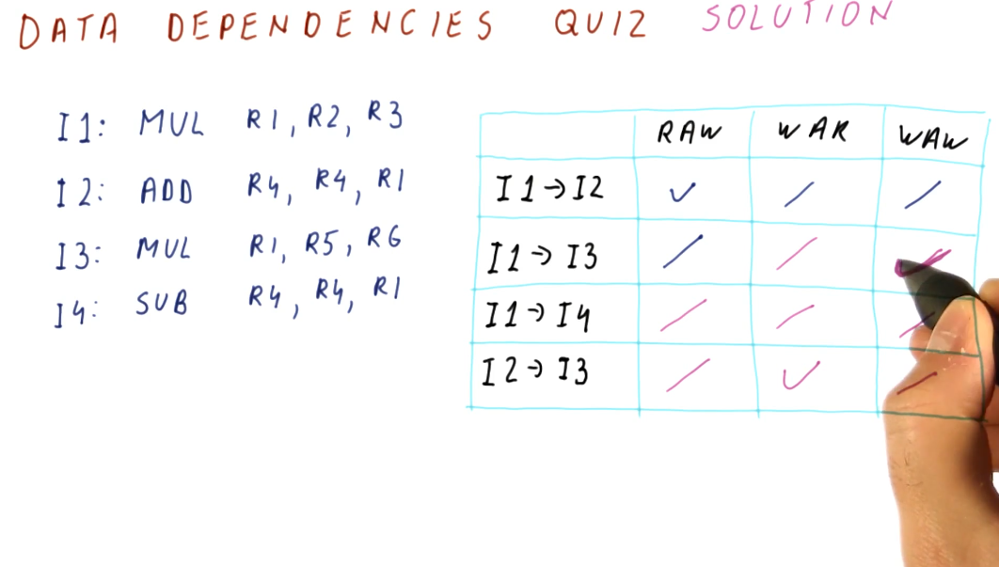
Data dependencies and hazards
A hazard is when a dependence results in incorrect execution of an instruction. In the example provided below, there are three instructions that have dependencies but their dependencies will not result in incorrect values being used for execution.
The DIV instruction, however, will be using a stale value for R4 when it
executes and writes to R10 because, when the DIV instruction reaches the
decode stage of the pipeline, the SUB instruction has not yet written its
value to R4.
Hazards can both be a property of the program as well as because of the pipeline. Another example provided in the image below shows that, in this 5 stage pipeline, true dependencies do not create a hazard when 3 or more instructions separate the dependent instructions. This is because, by the time the first instruction in the dependent pair executes and writes, the second dependent instruction is still being fetched.
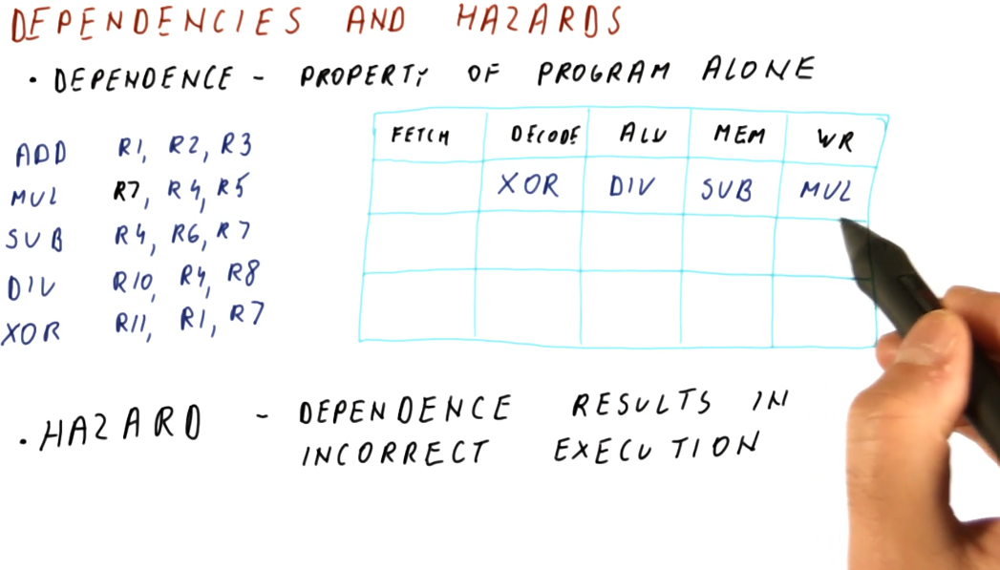
Below is an example problem with a 3 stage pipeline, demonstrating how we can inspect instructions to determine dependencies and hazards.
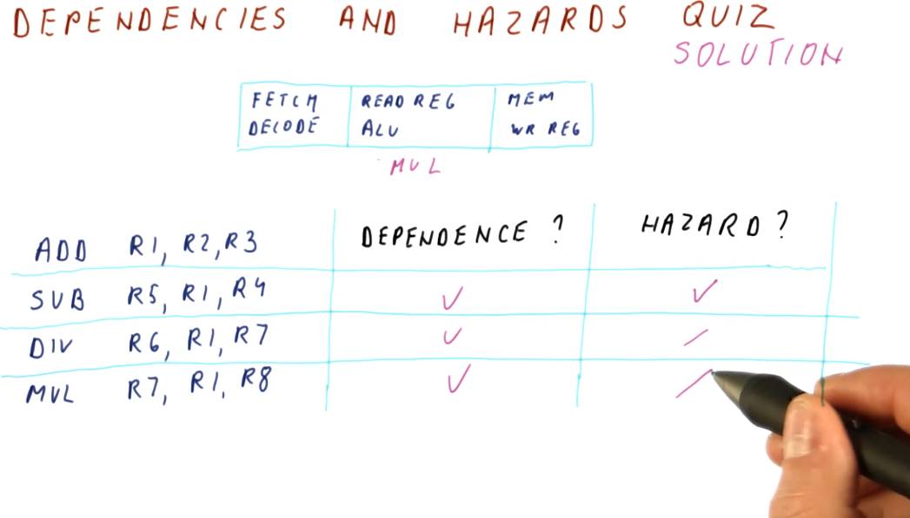
Handling of hazards
We need to introduce mechanisms to handle hazards we detect in order to protect our CPI and performance. We don't care about all dependencies that are introduced, only the ones we know will cause incorrect execution. These are our possible mitigation techniques:
- Flush dependent instructions - used for control dependencies. We don't intend to execute instructions introduced into the pipeline by control dependencies.
- Stall dependent instructions - used for data dependencies in order to prevent instructions from reading invalid values.
- Fix values read by dependent instructions - also used for data dependencies, this introduces the concept of forwarding, providing the a dependent instruction with the value it needs to correctly decode and execute.
Below is a high-level representation of these hazard handling mechanisms.

Below is an example problem with a 5 stage pipeline and a series of instructions containing multiple dependencies and hazards that must be avoided. This example demonstrates how we can use the pipeline to determine when it is appropriate to flush, stall, or forward to handle hazards.
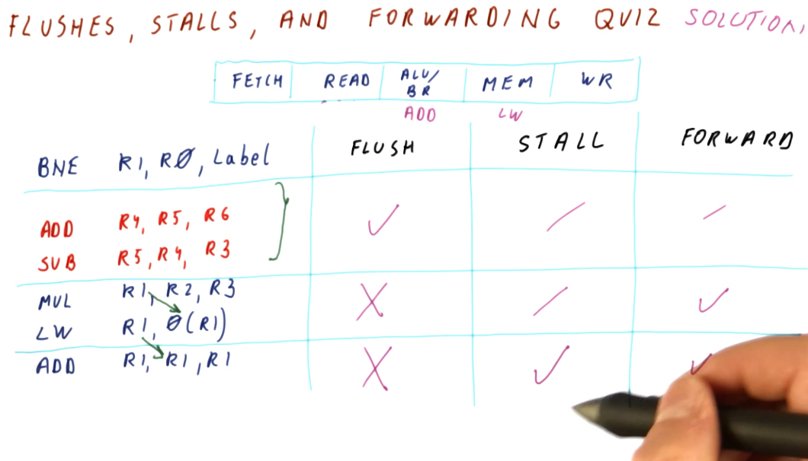
How many stages?
In the pipelines we've reviewed, the ideal CPI is 1. Later in the course, pipelines with a CPI higher than 1 are expected because the pipeline is attempting to execute more than one instruction per cycle. Regardless, each pipeline setup has an ideal CPI that it attempts to achieve.
So what happens if we add more stages? Well, we get more hazards. If a branch is resolved in the third cycle of a pipeline, we only have to flush the two previous instructions that were fetched and decoded. If a branch is resolved in, for example, the tenth cycle of a pipeline, now 9 instructions have to be flushed from the pipeline - kinda wasteful. With more hazards, our CPI also increases.
Inversely, with more stages in our pipeline there's less work being done per stage, decreasing our cycle time - we can execute cycles faster. Remember the Iron Law?
CPU time = #instructions * CPI * cycle_time
If our number of instructions stays the same, but our CPI increases and our cycle time decreases, we achieve a balance even with this longer pipeline. We carefully choose the number of stages in our pipeline to balance the relationship between CPI and cycle time.
Modern processors achieve the most performance with a processor pipeline of 30 - 40 stages as this strikes a perfect balance between cycle time and CPI. This is great, but with an increase in number or processor pipeline stages, we also draw a lot of power because we execute a lot of cycles per second. Thus, a reasonable number of stages for the processor pipeline of modern processors is 10 - 15 stages as this strikes the best balance between performance and power.
Below is a high-level representation of the concepts described above.
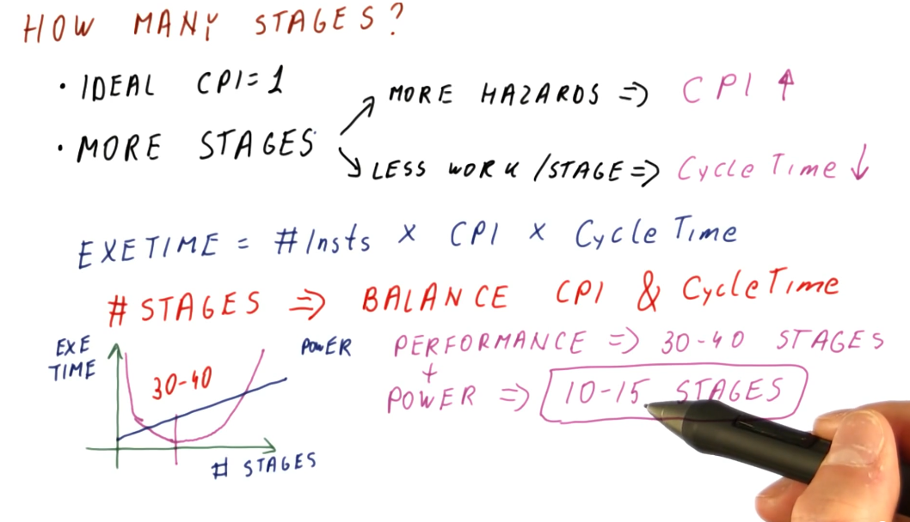